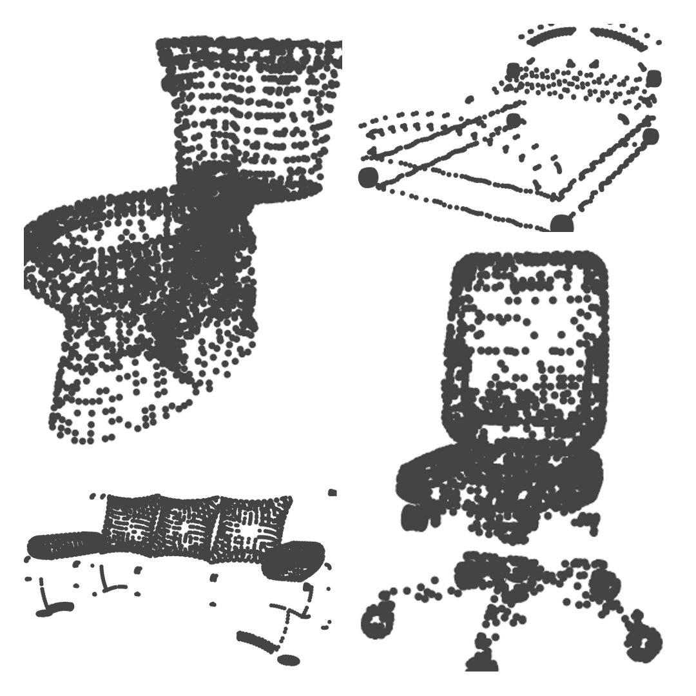
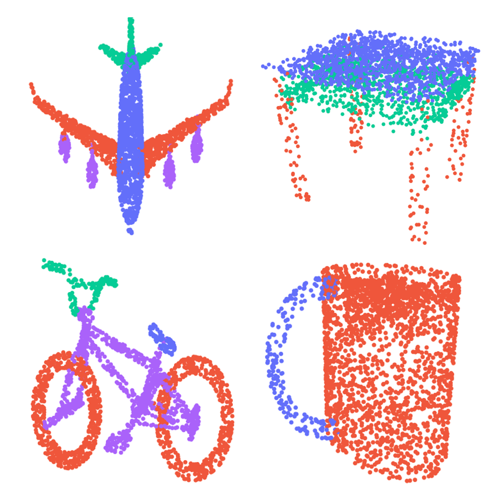

Point Clouds
-
In order to showcase the phenomenon of Geometric Deep Learning in the most visually appealing way, we've chosen 3D representations, in the form of point clouds, as the input data that will be fed into the neural nets.
-
In the field of 3D Modelling, point clouds are represented by sets of data points in a 3D coordinate system (i.e. a \(xyz\) ax system).
-
Each point represents a single spatial measurement of the object's exterior surface.
Classification vs. Segmentation
-
This app offers the possibility of training neural nets on either a classification or a segmentation task.
-
Classification involves assigning semantic labels to whole samples (i.e. recognizing objects as a whole)
-
Segmentation involves assigning labels to each point individually, in a process that aims to separate them into smaller groups, representing a particular part, surface of feature of an object.

Choose classification
Choose segmentation